СИСТЕМА ИЗМЕРИТЕЛЬНЫХ ПРИБОРОВ И ИНДИКАТОРОВ > ОПИСАНИЕ СИСТЕМЫ |
| ИЗМЕРИТЕЛЬНЫЕ ПРИБОРЫ И КОНТРОЛЬНЫЕ ЛАМПЫ / ИНДИКАТОРЫ |
| *A | для моделей с аналоговым щитком приборов | *B | для моделей с щитком приборов с оригинальной системой подсветки "Optitron" |
| *1 | Спидометр | *2 | Тахометр |
| *3 | Указатель температуры охлаждающей жидкости двигателя | *4 | Указатель уровня топлива |
| *5 | Мультиинформационный дисплей
| - | - |
| Параметр / Устройство | Описание |
| Спидометр | На основе сигналов, полученных от датчиков частоты вращения колес, ЭБУ системы противоскольжения рассчитывает скорость автомобиля и передает данные в щиток приборов (CAN). |
| Тахометр | Щиток приборов получает сигнал частоты вращения коленчатого вала двигателя от ECM и управляет стрелкой указателя (CAN). |
| Указатель температуры охлаждающей жидкости двигателя | Щиток приборов получает сигнал температуры охлаждающей жидкости от ECM и управляет стрелкой указателя (CAN). |
| Указатель уровня топлива | Щиток приборов получает данные о количестве топлива от датчика уровня топлива и управляет стрелкой указателя (прямое соединение). |
| Параметр / Устройство | Описание |
| Контрольная лампа BEAM 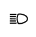 | Получает сигналы контрольной лампы BEAM от главного ЭБУ кузова (CAN). |
| Контрольная лампа DOOR 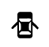 | Контрольная лампа незакрытой двери включается при получении сигнала от главного ЭБУ кузова (CAN). |
| Контрольная лампа FRONT FOG*1 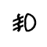 | Контрольная лампа включается при получении команды на включение контрольной лампы FRONT FOG (CAN). |
| Контрольная лампа REAR FOG*2 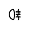 | Контрольная лампа включается при получении команды на включение контрольной лампы REAR FOG (CAN). |
| Контрольная лампа SRS | Получает сигналы неисправности от центрального блока управления системы SRS (CAN) |
| Контрольная лампа ремня безопасности водителя 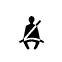 | Получает сигнал предупреждения о непристегнутом ремне безопасности водителя от главного ЭБУ кузова (CAN). |
| Контрольная лампа BRAKE 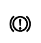 |
|
| Контрольная лампа ABS 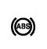 | Получает сигналы неисправности от ЭБУ системы противоскольжения (CAN). |
| Контрольная лампа CHARGE 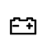 | Получает сигналы неисправности от генератора (прямое соединение и/или CAN). |
| MIL 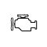 | Получает сигналы неисправности от ЕСМ (прямое соединение). |
| Контрольная лампа FUEL 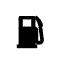 | Получает сигналы о низком уровне или отсутствии топлива от датчика уровня топлива (по прямому соединению). |
| Контрольная лампа скольжения SLIP*3 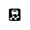 | Получает сигналы неисправности от ЭБУ системы противоскольжения (CAN). |
| Контрольная лампа VSC OFF*3 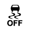 | Получает сигналы VSC OFF от ЭБУ системы противоскольжения (CAN). |
| Контрольная лампа TRC OFF*4 | Получает сигналы TRC OFF от ЭБУ системы противоскольжения (CAN). |
| Контрольная лампа TAIL 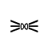 | Контрольная лампа включается при получении сигнала включения задних фонарей (CAN). |
| Сигнал контрольной лампы левого/правого указателя поворота 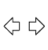 | Получает сигнал поворота от реле проблескового режима указателя поворота (прямое соединение). |
| Контрольная лампа PPS 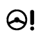 | Получает сигналы о состоянии рулевого управления с усилителем от ЭБУ рулевого управления с усилителем (по шине CAN) |
| Главная контрольная лампа аварийного состояния*5 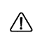 | Получает сигналы предупреждения от датчиков и ЭБУ (прямое соединение и CAN). |
| Контрольная лампа SIL (UP/DOWN)*6, *7, *8 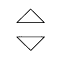 | Получает сигнал переключения передачи от ECM (по шине CAN). |
| Контрольная лампа движения в режиме Eco*9 | Получает сигнал контрольной лампы экологичного режима от ECM (CAN). |
| Контрольная лампа включения свечей накаливания*7, *10 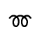 | Получает сигнал включения свечей накаливания от ECM (CAN). |
| Индикатор круиз-контроля*11 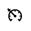 | Получает сигнал датчика системы круиз-контроля, поступающий от ECM (по шине CAN). |
| Индикатор настройки круиз-контроля*11 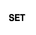 | Получает сигнал датчика системы круиз-контроля, поступающий от ECM (по шине CAN). |
| Контрольная лампа SPEED LIMIT*12 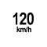 | Контрольная лампа включается при получении сигнала скорости автомобиля (CAN). |
| Контрольная лампа системы помощи при спуске по склону*13 | Получает сигналы системы помощи при спуске по склону от ЭБУ системы противоскольжения (CAN). |
| Контрольная лампа CRAWL*14 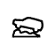 | Получает сигналы системы CRAWL от ЭБУ системы противоскольжения (CAN). |
| Контрольная лампа A/T OIL TEMP*9 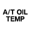 | Получает сигналы автоматической трансмиссии от ECM (CAN). |
| Контрольная лампа T-BELT*4, *7, *10 | Включается при показании одометра 150000 км. |
| Контрольная лампа предупреждения о необходимости замены масла*4, *6, *7 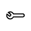 | Получает от ECM сигнал необходимости замены масла (по шине CAN). |
| Контрольная лампа выбора типа местности*14 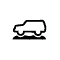 | Получает сигналы выбора типа местности от ЭБУ переключателя помощи при движении (CAN). |
| Контрольная лампа системы ультразвуковой локации*15 | Получает сигналы включения от ЭБУ системы помощи при парковке (CAN). |
| Контрольная лампа блокировки межосевого дифференциала 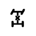 | Получает сигналы включения блокировки межосевого дифференциала от ЭБУ полного привода. |
| Контрольная лампа блокировки заднего дифференциала*23 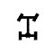 | Получает сигналы включения блокировки заднего дифференциала от ЭБУ полного привода. |
| Контрольная лампа 4LO - 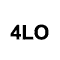 | Получает сигналы включения контрольной лампы 4LO от ЭБУ полного привода (CAN). |
| Контрольная лампа давления масла 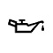 | Получает сигнал включения от контактного датчика давления масла. (Прямое соединение) |
| Контрольная лампа SEDIMENT/FILTER*7, *16 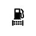 | Получает сигналы состояния отстойника / топливного фильтра от датчика отстойника топлива / датчика состояния топливного фильтра. |
| Контрольная лампа SEDIMENT*10 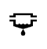 | Получает сигнал состояния отстойника от датчика отстойника топлива (прямое соединение). |
| Контрольная лампа ключа*17 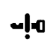 | Получает сигнал ключа от ЭБУ сертификации (CAN). |
| Контрольная лампа OIL LEVEL*7, *18 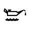 | Получает сигнал уровня масла от датчика уровня моторного масла (прямое соединение). |
Контрольная лампа AFS OFF*19 | Получает сигналы контрольной лампы AFS OFF от ЭБУ устройства поворота фар (CAN). |
| Контрольная лампа 2nd START*9 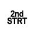 | Получает сигнал включения выключателя 2nd START от ECM (CAN). |
| Контрольная лампа PCS*20 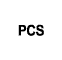 | Получает сигнал на включение контрольной лампы PCS от ЭБУ ремней безопасности (CAN). |
| Контрольная лампа радарной системы круиз-контроля*21 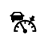 | Получает сигналы включения от ЭБУ помощи при движении (CAN). |
| Контрольная лампа кинетической динамической системы подвески*22 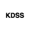 | Получает сигналы состояния кинетической динамической системы подвески от ЭБУ кинетической динамической системы подвески (CAN). |
| МУЛЬТИИНФОРМАЦИОННЫЙ ДИСПЛЕЙ (для моделей с аналоговым щитком приборов, кроме моделей с двигателем 5L-E) |
При каждом нажатии переключателя ENTER отображаемая информация изменяется в следующем порядке.
| *a | Одометр | *b | TRIP A |
| *c | TRIP B | *d | Дальность пробега |
| *e | Текущий расход топлива | *f | Отображение среднего расхода топлива и зоны индикации режима Eco (для моделей с автоматической трансмиссией) |
| *g | Средняя скорость автомобиля | *h | Отображение экрана настройки контрольной лампы движения в режиме Eco (для моделей с автоматической трансмиссией) |
| МУЛЬТИИНФОРМАЦИОННЫЙ ДИСПЛЕЙ (для моделей с щитком приборов с оригинальной системой подсветки "Optitron" и двигателем 5L-E) |
| 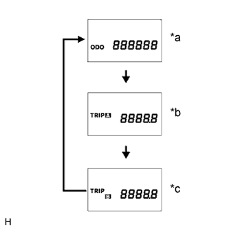 |
При каждом нажатии переключателя ENTER отображаемая информация изменяется в следующем порядке.
| *a | Одометр |
| *b | TRIP A |
| *c | TRIP B |